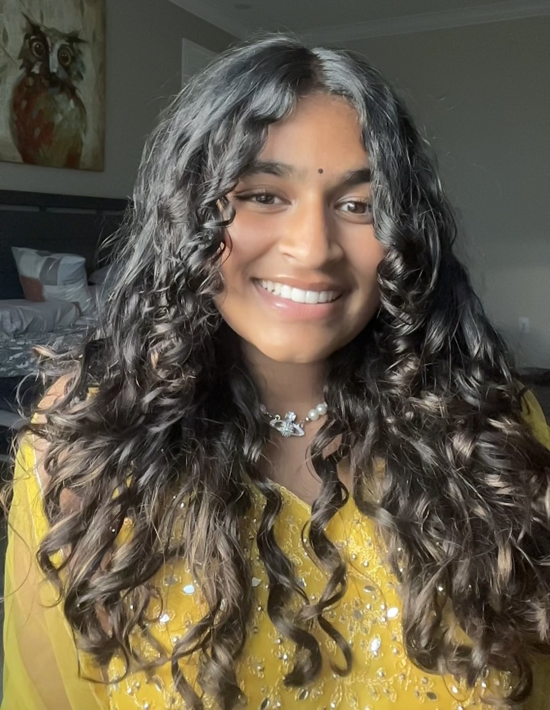

Hi! I'm Rhea Raj,

What are my career goals?
I always knew I wanted to work with computers and communicate with other people about solving different scenarios like
computer errors or hacking issues.When I was younger I never knew there was an actual job that could help identify different
errors, make programs that c*an benefit others, and produce different codes to help different organizations use different
specific websites. Cybersecurity is a field that I would enjoy working in, I've had experience with block programming
using MIT, and coding using Java, and Visual Studios. I took a computer science course this year in Mr. Baez's class
and enjoyed challenging myself with different scenarios and am planning to go to AP Computer science next year.
This class has taught me so much about cooperation, pair programming, VS coding, and learning how to create a website
that can help other people who access it. Not only has computer science taught me about following deadlines, but also
taught me how to work with new people and create roles to see who's best fit for what job. I chose computer science as
a major because I really enjoyed paying attention to computer science and learning about programming different
applications. I have programmed many different fully functioning websites and programs on different websites including
MIT, and using Visual studios to make my own web page.
Strengths and personal qualities and Achievements!
My computer science teacher has told me numerous times that I have a great desire to not give up or quit, showing that if I
were to participate in a computer science role, with my prior knowledge and strength to continue even during hard times I can
easily handle any technical challenges. I’m also very flexible with who I work with and enjoy communicating and discussing
both views on each project. This would be useful as most websites are built with pair programming and cooperation.
While creating a creativity project me and my partner had to cooperate, brainstorm, and worked together to create an
interactive story game that people could play and get different outcomes, If we had continues the app we could have
easily added more features such as leveling up, scores, and more to make sure that the app is a enjoyable game for
audience to play. While my biggest achievement wasn’t directly related to computer science, it had to do a lot with
teamwork, trust, and playing roles which is a lot of what computer science is. My biggest achievement was joining the
Emerald Girls Basketball team and being able to cooperate with my teammates, have trust in them, and be their support
in case anything was to go wrong. These skills can easily help in pair programming since I could work with my partners
to fix any issues, errors, or mistakes in the program.
My Abilities
I’ve learned a lot from my achievements that real achievements take time, and getting to know who you’re working with and
being able to create an emotional bond of trust. Programming or playing basketball with somebody who you don’t know, or trust
won’t help anybody with any progress. I’ve learned that you need to communicate with others, be able to trust others, and
know that you can’t achieve pair programming without the pair. Teamwork, effort, and time can add to a better program
that's more efficient and can also lead to a less harsh working environment. Which is why I believe that computer science
is a great job to experiment with meeting new people, learning new things, being able to depend on others and help others
with any issues or problems in the computer world and also just being able to work with computers to handle applications
and help other fields like the medical field have personal procedures fit to their hospital.
Conclusion
So as mentioned multiple times throughout this web page, being in computer science would be a dream come true since it's not just
about computers and programming, it's about building relationships, learning new things, and being able to challenge yourself and
handle tough scenarios. I appreciate you for taking the time to view my web page. I promise to ensure that I can work easily with
others and continue to make new applications that can help solve a variety of problems! If you have any questions or concerns feel
free to contact me at raj6887@mydusd.org, thank you for your time!